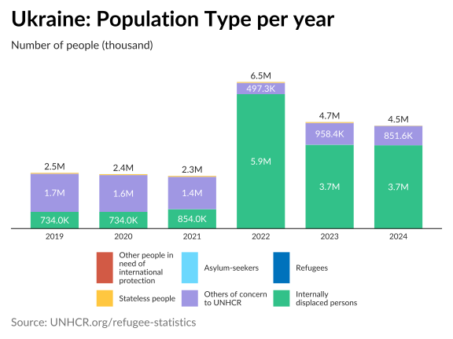

Reporting Engine: This package functions as the “Reporting Engine” for UNHCR statistics. It focuses on orchestrating automated reports by combining data, visualization, and AI narratives.
Data Source: Fetching the latest official statistics via the
{refugees}package.Graphics Source: The standardized charts and maps used in these reports are built upon the
{unhcrviz}package, which provides a high-level chart library API over{unhcrthemes}.
{unhcrreports} automates the production of analytical reports (Country and Regional) by:
Visualizing Trends: Generating standardized plots.
Generating Narratives: Using Large Language Models (LLMs) to interpret data and write context-aware insights.
Publishing: Compiling everything into polished Quarto reports.
Rationale
While anyone can already ask a large language model to call the UNHCR API and assemble an ad‑hoc analysis, that approach remains fundamentally limited: every chat interaction produces a different framing, different emphases, and different analytical pathways. By contrast, using AI to generate narrative on top of a standardized set of charts and indicators introduces a level of methodological consistency that simple chat-based prompting cannot achieve. This framework ensures that every operation is analyzed through the same structured lens, enabling comparability across countries, time periods, and thematic areas. Instead of reinventing the analysis each time, the AI is anchored in a stable analytical model—reducing variance, improving coherence, and guaranteeing that key questions are always addressed.
Just as importantly, this method produces narrative drafts that are “human‑in‑the‑loop ready”: analysts can immediately focus on refinement, nuance, and validation rather than on assembling first‑pass descriptive text. The result is a workflow where AI accelerates the routine narrative generation, while human experts retain control over interpretation, context, and judgment.
Installation
This package is built with the help of {fusen}. You can install it from GitHub with:
# Install from GitHub
devtools::install_github("matheus-hardt/unhcrreports")
# Install from local source
devtools::install(".")Usage
You can also use individual functions to generate analysis. For example, to analyse the Population Type per Year for Ukraine in 2024:
library(unhcrreports)
library(unhcrviz)
library(ggplot2)
# 1. Generate the plot
p <- unhcrviz::plot_ctr_population_type_per_year(
year = 2024,
country_asylum_iso3c = "UKR"
)
# 2. Generate the story (using Gemini as an example)
story <- generate_plot_story(p,
provider = "gemini",
model = "gemini-3-pro-preview"
)
# Pull the long text
story$long_text
AI Narrative: The displacement landscape in Ukraine for 2024 continues to be dominated by the internal displacement crisis. Internally Displaced Persons (IDPs) represented the overwhelming majority of the affected population, maintaining the plateau reached after the sharp escalation in 2022. While the number of Asylum Seekers and Returnees remains statistically visible, they represent a minor fraction of the total displacement figures, emphasizing that the primary humanitarian challenge remains within the country’s borders.
Quick Start
Generate a full report with a single command:
library(unhcrreports)
# Generate a Country Report (e.g., Brazil)
generate_report(
type = "country",
name = "BRA",
year = 2024,
gp_provider = "gemini", # or "openai", "ollama", "azure"
gp_model = "gemini-3-pro-preview",
include_ai = TRUE # Set to FALSE to skip AI generation
)AI Configuration
To enable AI-generated narratives, you need to set up an API key for a supported LLM provider.
Environment Setup
Set your API key as an environment variable in your .Renviron file or session:
# For Google Gemini
Sys.setenv(GEMINI_API_KEY = "your_api_key_here")
# For OpenAI
Sys.setenv(OPENAI_API_KEY = "your_api_key_here")
# For Anthropic
Sys.setenv(ANTHROPIC_API_KEY = "your_api_key_here")
# For Azure OpenAI
# Sys.setenv(AZURE_OPENAI_ENDPOINT = "...")
# Sys.setenv(AZURE_OPENAI_API_KEY = "...")Local LLM (Ollama)
If you prefer to run a local model using Ollama:
- Install Ollama: Download from ollama.com.
-
Pull a Model:
bash ollama pull qwen2.5:32b -
Run Report: Passing
gp_provider = "ollama"andgp_model = "qwen2.5:32b".